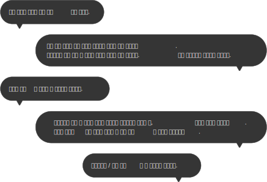
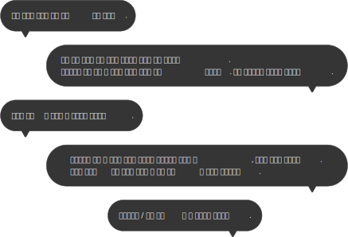
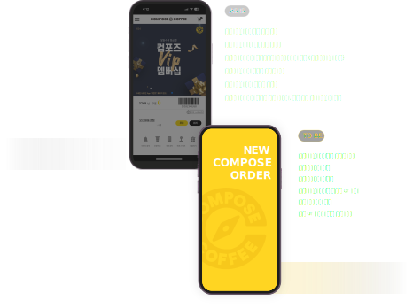
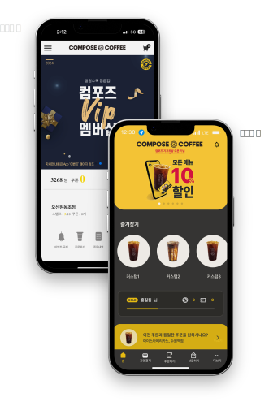
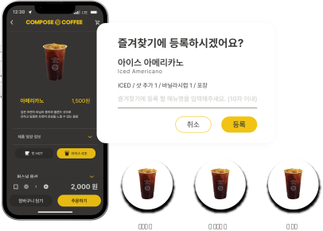

Result ➡️
- ① 간편하고 빠른 주문 프로세스 구현
- ② 컴포즈커피 브랜드 이미지에 맞는 모던한 디자인 구현
- ③ 데스크리서치-ux디자인-ui디자인-프로토타입의 프로세스를 이해 및 실행하고 최종적으로 개선 아이디어를 바탕으로 시각적으로 구현
- ④ 가장 불편했던 ‘주문하기’ 버튼의 위치와 주문 경로 개선으로 청중들의 공감과 이해를 이끌어냈다.
- ⑤ 매장 선택 화면에서 주문 가능 지역의 거리를 1km로 지정하였으나, 선택지가 좁다는 청중의 피드백으로 추후 거리를 3km로 늘려 개선할 예정이다.
Review ✏️
- 😓 아쉬운 점
- ① 타사 앱과의 유사성 & 차별성 부족
- · 비슷한 목적의 앱들이 이미 많이 출시된 상태에서 참고를 하다 보니 ui ux 디자인이 타사 앱들과 유사하게 설계가 되었는데, 그 때문에 색상을 제외한 ui ux 면에서 차별성이 두드러지지 못한 게 아쉬웠다.
- ② 효율성 부족
- · 리서치 과정에서 뒤늦게 추가한 부분들이 발생했다.
- · 역할 분담이 제대로 이루어지지 않아 주어진 시간을 효율적으로 사용하지 못했다.
- 👏 성과
- ① 높은 참여도
- · 모든 과정에 적극적으로 참여하여 참여도가 높았다.
- ② 리더십 발휘
- · 방향을 잡지 못해 긴 시간을 방황하는 팀원에게 올바른 방향성을 제시하고 독려하였다.
- ③ 디자인 보완
- · 프로젝트 진행 중 부족했던 디자인을 위해 디자인 전공자인 본인이 더 나은 방향을 제시했고, 이를 통해 더욱 완성도 높은 결과물을 만들어낼 수 있었다.
- ✍️ 배운 점
- ① 팀 역할 분담과 계획 수립의 중요성
- · 이번 팀 프로젝트를 진행하면서, 후반부로 갈수록 손이 빠른 팀원이 대부분의 업무를 맡아 처리하는 상황이 발생했다. 처음에 공정성을 고려해 역할을 구체적으로 나누지 않은 것이 문제였는데, 각자의 파트와 역할이 모호하다 보니 작업을 빨리 끝낸 사람이 남은 일을 도맡게 되었다. 또한, 명확한 계획과 기한이 없어 시간에 쫓기는 느낌도 강했다. 이 경험을 통해 효율적인 업무 진행과 팀워크 강화를 위해서는 구체적인 역할 분담과 계획 수립이 필수적이라는 것을 깨달았다.
- ② 리서치의 중요성
- · 프로젝트 초반에는 리서치의 중요성을 간과하고, 그저 눈에 잘 띄고 예쁜 디자인에만 집중했다. 그러나 뒤늦게 그동안 수집한 일부 자료들이 프로젝트 목표와 맞지 않는다는 것을 깨닫고, 초기 의도와 다른 방향으로 진행되는 어려움을 겪게 되었다. 이때 리서치가 프로젝트의 방향성을 결정하는 핵심 단계임을 알게 되었고, 양질의 리서치가 결과물의 완성도에 큰 영향을 미친다는 사실 또한 깊이 인식하게 되었다. 더 나아가 디자인 철학에 대해서도 다시금 고민하게 되었다.
- ③ 시도와 경험의 중요성
- · 평소 자신감 부족과 긴장감으로 발표를 피하곤 했으나, 이번 프로젝트에서는 이를 극복하기 위해 스스로 발표를 맡았다. 짧은 준비 기간에도 불구하고 성공적으로 발표를 마쳐 좋은 평가를 받았으며, 두려움이 있더라도 스스로 도전하고 경험하는 것이 성장의 중요한 요소임을 깨달았다.
APP Renewal
Concept Design
UI / UX Team Project
빠른 주문을 위한 컴포즈커피 오더 앱
UI UX 개선 프로젝트

Background
'빅4 브랜드' 매장 전국 8000개... 저가커피 전성시대
'노란 간판' 저가커피 3사 매장, 하루 4개씩 늘었다
저가 커피 3사 매장수 7천개 넘어서... 고물가에 2030 몰려
높은 접근성의 저가커피 매장, 하지만 오더 앱은?
저가커피 오더 앱에 대한
경험을 물어봤어요
저가커피 오더 앱을 이용하고 있다는 20대 이용자에게 물어봤어요.
그래서, 저가커피 3사 오더 앱의
UI UX를 직접 분석해보고 비교해봤어요
대표적인 저가커피 3사 빽다방, 메가커피, 컴포즈 커피의 오더 앱 UI UX를 비교 분석했어요.
그 결과, 불필요한 경로가 존재하는 UX와 화면
비율이 맞지 않는 등 UI 면에서도 비교적
안정성이 떨어지는
컴포즈커피 앱을 리뉴얼 앱으로 선정하게 되었어요.


컴포즈커피 오더 앱을 사용 중인
다른 사용자들의 리뷰는 어떨까요?
실제로 많은 사용자들이 불편함을 호소하고 있는 부분에 대해 분석했어요.
 앱스토어 리뷰, 구글 Play 스토어 리뷰그리고, 공통적으로 야기되는 문제점이 발견됐어요
check 금액권 잔액 조회 불가
check 주문 상태 확인 어려움
check 비직관적인 메뉴명과 중복된 메뉴로 인한 혼란
check 주문 프로세스의 번거로움
check 매장 이용 여부 선택 불가
check 기프티콘 및 금액권 결제의 번거로움
"사용자에게는 간단하고 직관적인 앱이 필요하다"
사용자를 대표할
가상인물을 선정했어요
30대 여성 직장인
김지현 ㅣ 30세, 직장인 #바쁜 직장인 #완벽주의 #가성비 추구
저는 여의도 증권회사에 재직 중인 김지현이에요. 곧 입사 3개월 차를 앞두고 있는데, 워낙 바쁜 업무 때문에 커피가 제게는 생명수나 마찬가지예요. 하지만 커피를 픽업하는 데에 시간을 쓰긴 아깝잖아요? 그래서 늘 오더 앱을 쓰곤 하는데, 정신없이 주문할 때면 주문을 실수할 때도 있고 항상 같은 메뉴를 먹으면서도 매번 같은 과정을 거쳐 주문하는 게 꽤 번거롭게 느껴지더라고요. 저에게는 직관적이고 빠르게 주문할 수 있는 커피 오더 앱이 필요해요.
goals
직관적이고 빠르게 주문할 수 있는 커피 오더 앱을 제작하자!
그리고 기존의 UI UX 에서 무엇을, 어떻게
개선하면 좋을지 고민했어요

커피 주문,
이제 더 이상 귀찮지 않아요
빠른 주문을 도와주는 원터치 버튼과 즐겨찾기 기능, 직관화된 메뉴로 사용자에게 편의를 제공합니다.

before
& after

one-touch order
늘 먹던 걸로 주세요!
매일 같은 매장, 같은 메뉴를 먹는다면 매번 번거롭게 선택할 필요가 없어요.
원터치 주문으로 귀찮은 과정은 SKIP!
bookmark
오늘은 이 메뉴가 당기네?
즐겨찾기 기능을 활용하여 자주 먹는 메뉴를 빠르게 주문해보세요.
gifticon simple payment
잠시만요...
선물 받은 기프티콘이 어디 있더라?
현장 결제시 기프티콘을 찾느라 당황하신 적 있으시죠?
이제 그럴 필요 없어요. 미리 등록한 기프티콘으로 빠르게 현장 결제하세요.

등록한 기프티콘은 앱 결제시에도 사용이 가능합니다.